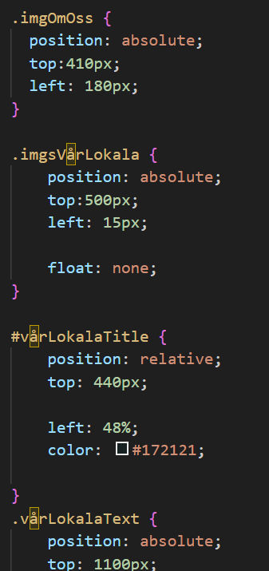
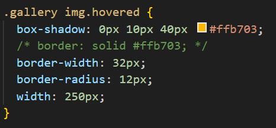
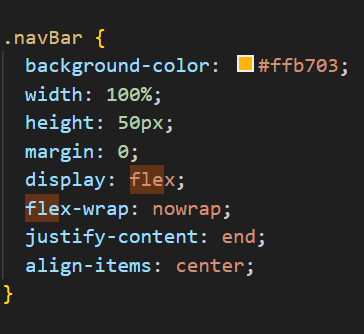
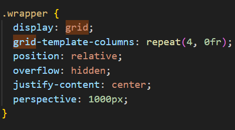

I den här fasen skapade jag några globala variabler och en funktion som blandar korten varje gång vi startar spelet.
Koden
HTML
Jag har försökt använda en semantisk kod för min HTML för att hålla koden snygg och lätt orientera sig på sidan.
Jag försökte faktiskt dela upp sidan i fördefinierade avsnitt. Jag använde också nästan bara "class"-attribut för att att spara så mycket kod som möjligt.
Css




Några CSS-exempel som jag har använt ofta i min kod och/eller har påverkat dess stil:
- "class"-attribut (för att kunna maximera min kod och minska antalet väljare);
- "hover" pseudokod (för att ge en effekt till elementet vid hovring);
- display flex (en multifunktionell layout perfekt för en responsiv webbplats)
- display grid (en alternativ layout till flexbox som jag skapade rutnätet med kort med)
JS
Jag kommer att använda nyckelbilder för att förklara de viktiga punkterna i min kod:
Vid det här laget skapar jag två funktioner för att hantera kortens två "ansikten": den första handlar om att avslöja korten för att låta användaren memorera dem och den andra med att täcka dem för att faktiskt starta spelet.
FlipCard-funktionen lägger till klassen "flipped" via en växling när if-villkoret inträffar.
Här försöker jag skapa en vinstcheck som visar mig en vinst "alert" om alla par är positivt parade i rad. Alternativt en nederlags "alarm" vid det första misstaget.
Tyvärr har jag i skrivande stund inte lyckats fullfölja villkoren ännu. Därför kan denna fas av koden genomgå variationer.
I denna sista fas (som faktiskt är början på allt) tillskriver jag evenListeners till kortens två ytor, jag skapar spelstartproceduren genom StartGame-funktionen som bland annat innehåller en 5-sekunders timeOut som täcker korten efter att ha visat dem för användaren. Slutligen ger jag användaren makten att klicka på knappen för att starta spelet.
Senare lade jag till möjligheten att starta spelet med "Enter"-tangenten för webbplatsens tillgänglighet.